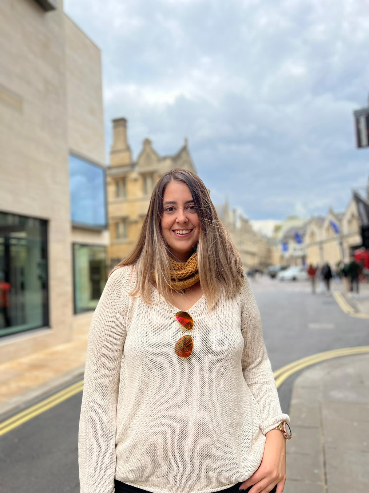

Alara
Ph.D. Research Student
Biological and Medical Sciences
Oxford Brookes University, UK
Nigel Groome Studentship

About Me
I was always interested in the miracles behind life and living creatures. Since I was an infant, I always questioned the reasons behind events. I got into the science club in elementary school, prepared projects for TÜBİTAK and other competitions in high school, and finally when it was time for me to choose my future I was mesmerized by genetics. It was one of the best decisions in my life. Besides my hard work in academics, I am also quite talented in organizations, talks, and presentations. I wanted to develop my interest and talents in these areas too. My willingness to teach is my beacon throughout my first years as an educator. I am a person with high confidence, I can be a team member or a leader accordingly, I am good with people, and I have high communication skills. In the future, I want to be a scientist who works for science and humanity and an academician who raises the next generation of scientists. I mainly combine wet-lab skills with bioinformatic skills for my Ph.D. research, and continue to do so to be able to see research in a multi-disciplined manner and contribute to them.

Educational Background
Doctor of Philosophy Research Degree (Ph.D.) 2022-Present, Department of Biological and Medical Sciences, Faculty of Health and Life Sciences, Oxford Brookes University (Nigel Groome Studentship)
Master of Sciences (M.Sc.) 2018-2022, Molecular and Translational Biomedicine, Institute of Natural and Applied Sciences, Acibadem Mehmet Ali Aydinlar University (GPA: 4/4) (Outstanding Success Scholarship (100%)Education and Food included)
Bachelor of Sciences (B.Sc.) 2014-2018, Molecular Biology and Genetics Department, Faculty of Arts and Sciences, Acibadem Mehmet Ali Aydinlar University (GPA:3.63/4, ranked 2nd among graduates from Molecular Biology and Genetics Department) (Outstanding Success Scholarship (100%)Education included)
Job Experience
Demonstrator: Department of Biological and Medical Sciences, Faculty of Health and Life Sciences, Oxford Brookes University (26.09.2022 – Present)
Research Assistant: Molecular Biology and Genetics Department, Faculty of Engineering and Natural Sciences, Acibadem Mehmet Ali Aydinlar University, İstanbul (06.04.2022 - 05.09.2022)
Research Assistant: Molecular Biology and Genetics Department, Faculty of Arts and Sciences, Acibadem Mehmet Ali Aydinlar University, İstanbul (23.12.2019 - 06.04.2022)
Genetic Knowledge Consultant and Assistant: ELSIE GENETIC, Istanbul (01.03.2018 - 31.07.2018)
Intern: Tübingen University, Germany ZMBP ( Zentrum Für Molekularbiologie der Pflanzen - Center of Molecular Plant Biology ) ( June 2017 - August 2017)
Intern: Sabanci University Nanotechnology Center (SUNUM) (August 2016-September 2016)
Trainee: Acibadem Mehmet Ali Aydinlar University Research Laboratories (May 2015-May 2016)
Presentation Personnel (Part-time): Acibadem Mehmet Ali Aydinlar University (May 2015 - July 2015)
Skills
I've lots of skills which some of them can be listed as below:
I'm a fast learner and ambitious to learn more everyday.
Projects
I've been involved in several projects, programs, and competitions which the main ones are listed below.
Ph.D. Research
I am investigating the molecular mechanism of Groucho protein function during development in Drosophila Melanogaster with Dr. Barbara JENNINGS and Dr. Korneel HENS.


{kind=link}
M.Sc. Research
I studied with Dr. Cengiz YAKICIER and Assist. Dr. Zeynep TOKCAER KESKIN on the co-occurrence of 3 SNPs on the BRCA1 gene and its effect on pathogenicity.


Social Media Ambassador
I was the social ambassador for 'The Changing Landscape Changing Lives' and 'Health and Life Sciences Postgraduate Research Symposium Day' at Oxford Brookes University


CEO x 1 Day Finalist
CEO x1 Day program is a global initiative designed to uncover promising future leaders and allow students to learn business and leadership skills from the top executives. During this program I had a chance to attend many seminars and workshops. I was one of the finalists (22 total) out of over 200 participants for 2018-2019 after several months of very detailed evaluation and elimination process. As a finalist, I had a chance to spend a day with Hakan Şahin, CEO of Nobel Pharmaceuticals.
For Further Details
To get further details on my career, you can download my CV with the button down below.
Get in touch
© Alara Erenel
. All rights reserved..